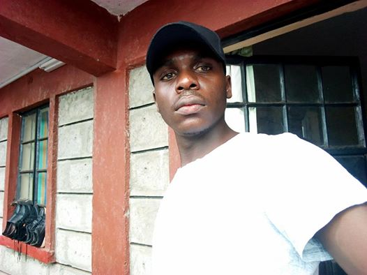
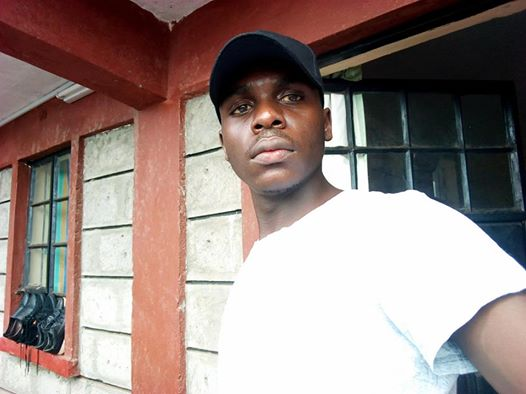
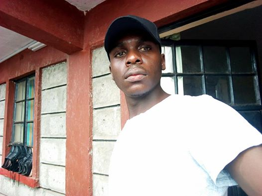
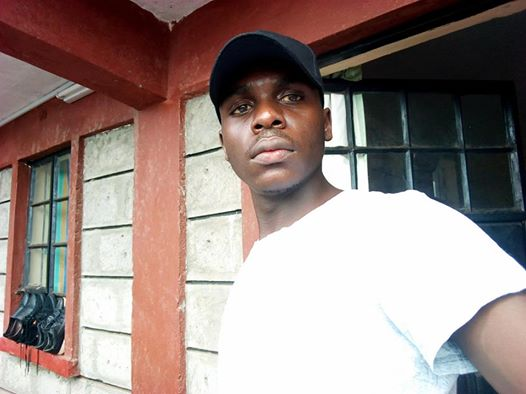

Hi am wandera victor, Born December 23 1995.I was born in western province.I went to kings juniour primary school from class 1 to class 6. from kings juniour i joined kanduyi primary school where i studied up to class 8. I succefully managed to get 315 marks in my kcpe. I joined st marks boys high school cheranganiWhere i got a c+ in my forth form level. I joined jomo kenya kenyattta university of agriculture and technology where i did a diploma in infomation and technology. from there i did my attachment at KACWASCO(kakamega county water and and sanitation compony). After graduating from jkuat i joined moringa school where i decided to venture in the programing sector.
Moringa School is a world-class software developer accelerator based in Nairobi, Kenya Their goals are to build human capacity by training people of varied technical ability in a holistic way. They focus on both technical proficiency and personal growth , meaning that graduates are effective learners and contributors, and well rounded employees and leaders. I was introduced to moringa school by a friend who was also part of the school.
I have currently worked with KACWASCO as an IT intern. I have also worked with JICA (Japan International Cooperation Agency).
I really like doing a lot of research mostly on digital specically on modern cars